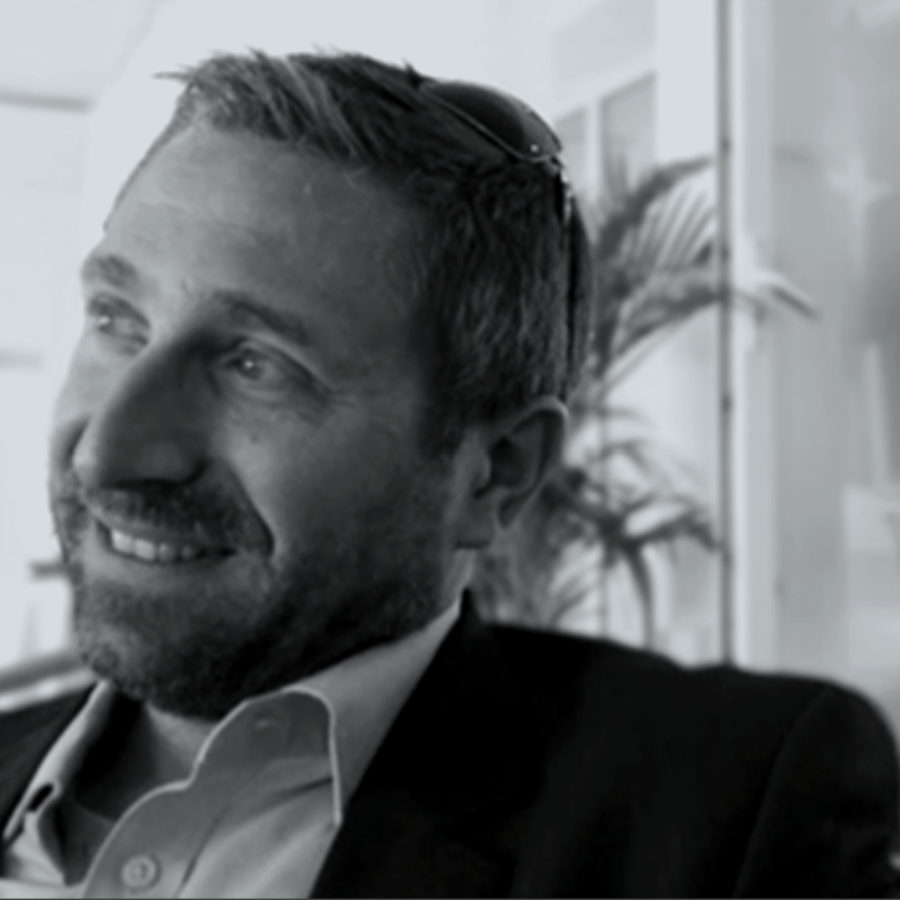

+About
Expertise in generalism.

I've spent 30 years in all three seats of real estate development — leading design on landmark institutional projects, managing complex construction, and directing ground-up development from the owner's side of the table. That combination is exceptionally rare in any one of the disciplines, and it's the foundation of OAC: I write from lived experience in the gaps and overlaps between owner, architect, and contractor — not from theory. The name references the Owner-Architect-Contractor coordination meeting, the weekly ritual on every project where the three disciplines either align or collide. My conviction, tested on projects from $15M to over $1B, is that the delivery of the built environment depends on genuine collaboration across siloed roles — and that most of what each discipline experiences as someone else's problem can be resolved by making that collaboration legible and practical.
+Credentials
Content borne out of actual experience carries credibility that purely theoretical content cannot match.